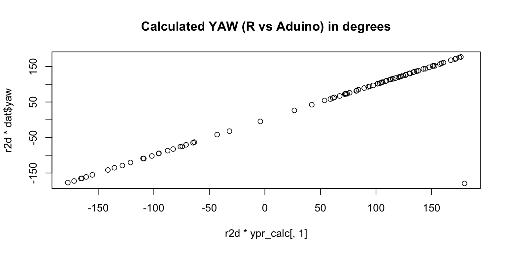
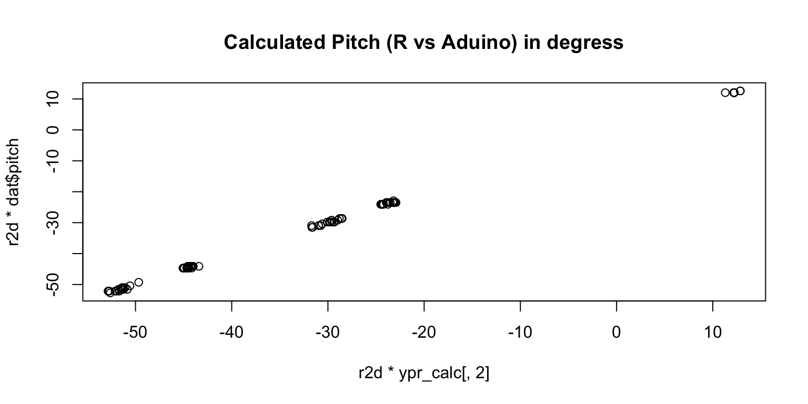
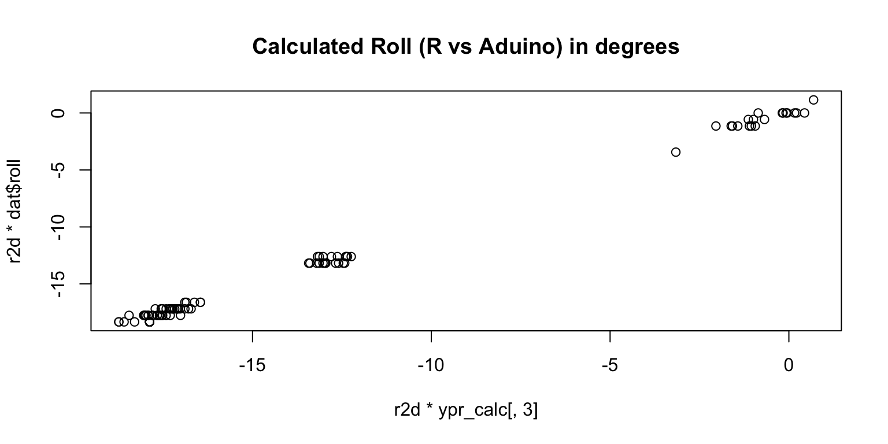

Code
dmpMpu[num].dmpGetQuaternion(&q, fifoBuffer);
dmpMpu[num].dmpGetGravity(&gravity, &q);
dmpMpu[num].dmpGetYawPitchRoll(ypr, &q, &gravity);This document describes how the orientation of the IMU in terms of yaw,pitch, and roll is calculated from the information provided by the IMU (we use the MPU-9250).
The result of the calculations in the Digital Motion Processor (DMP) done in the IMU are reported as quaternions (basically a short coding of the rotation between the IMU and the fixed laboratory system). Technically they are send to the Aduino (as a byte vector the fifoBuffer). On the Aduino the following steps happen:
The result of the FIFO Buffer is parsed and written in a Quaternion with components \(q=(q_w, q_x, q_y, q_z)\) this is done in `dmpGetQuaternion`
The vector of gravity is calculated in dmpGetGravity
From that vector (and the gravity) the yaw, pitch, and roll angles are calculated `dmpGetYawPitchRoll`
dmpMpu[num].dmpGetQuaternion(&q, fifoBuffer);
dmpMpu[num].dmpGetGravity(&gravity, &q);
dmpMpu[num].dmpGetYawPitchRoll(ypr, &q, &gravity);In the first line the quaternion send from the DSP is read from the fifoBuffer and parsed into the variable q. The quaternion q contains all information about a single IMU. This is done with the following code:
uint8_t MPU6050::dmpGetQuaternion(int16_t *data, const uint8_t* packet) {
// TODO: accommodate different arrangements of sent data (ONLY default supported now)
if (packet == 0) packet = dmpPacketBuffer;
data[0] = ((packet[0] << 8) | packet[1]);
data[1] = ((packet[4] << 8) | packet[5]);
data[2] = ((packet[8] << 8) | packet[9]);
data[3] = ((packet[12] << 8) | packet[13]);
return 0;
}
uint8_t MPU6050::dmpGetQuaternion(Quaternion *q, const uint8_t* packet) {
// TODO: accommodate different arrangements of sent data (ONLY default supported now)
int16_t qI[4];
uint8_t status = dmpGetQuaternion(qI, packet);
if (status == 0) {
q -> w = (float)qI[0] / 16384.0f;
q -> x = (float)qI[1] / 16384.0f;
q -> y = (float)qI[2] / 16384.0f;
q -> z = (float)qI[3] / 16384.0f;
return 0;
}
return status; // int16 return value, indicates error if this line is reached
}The yaw, pitch, roll information is calculated from the quaternion in two steps. First the vector pointing to the direction of gravity is calculated in dmpGetGravity
This is the code from MPU6050_6Axis_MotionApps20.h
uint8_t MPU6050::dmpGetGravity(VectorFloat *v, Quaternion *q) {
v -> x = 2 * (q -> x*q -> z - q -> w*q -> y);
v -> y = 2 * (q -> w*q -> x + q -> y*q -> z);
v -> z = q -> w*q -> w - q -> x*q -> x - q -> y*q -> y + q -> z*q -> z;
return 0;
}Mathematically speaking this code constructs the vector of gravity as follows:
\[ \begin{align} v_x &= 2 (q_x q_z - q_w q_y) \\ v_y &= 2 (q_w q_x + q_y q_z) \\ v_z &= q_w^2 - q_x^2 - q_y^2 + q_z^2 \end{align} \]
This translates into the following R code:
dmpGetGravity = function(q){
qw = q[1]
qx = q[2]
qy = q[3]
qz = q[4]
vx = 2 * (qx * qz - qw*qy)
vy = 2 * (qw * qx + qy*qz)
vz = qw^2 - qx^2 - qy^2 + qz^2
return(c(vx,vy,vz))
}
q.vec = as.matrix(c(0.32, 0.30, 0.29, -0.85), ncol=1)
dmpGetGravity(q.vec)[1] -0.6956 -0.3010 0.6508What is happening in the code? We are asking “How does the gravity” looks like on the IMU \(g_{\tt{IMU}}\)? The gravity in the laboratory frame is given by $g_{\tt{lab}}=(0,0,1)$. Note that, we could also define a different lab frame in which the gravity is e.q. given by \((0,1,0)\). From the Quaternion Algebra (see e.g. Note_on_Quaternion), we know that:
\[ q_{\tt{lab}} = q \; q_{\tt{IMU}} \; q^{-1} \]
Where \(q_{\tt{lab}}=(0,0,0,1)\) and \(q_{\tt{IMU}}=(0,g_x, g_y, g_z)\) are pure quaternions, i.e. they take the vectors and set the real part \(w\) to 0. To solve for \(q_{IMU}\), we multiply with \(q^{-1}\) and \(q\) from left and right. Getting:
\[ q_{\tt{IMU}} = q^{-1} \; q_{\tt{lab}} \; q \] We can verify this with the R-Code:
q = as.quaternion(q.vec)
qz = quaternion(Re = 0, k = 1)
qz [1]
Re 0
i 0
j 0
k 1q^-1 * qz * q Re
Re -2.220446e-16
i -6.962963e-01
j -3.013013e-01
k 6.514515e-01gravity = dmpGetGravity(q.vec)
gravity[1] -0.6956 -0.3010 0.6508The code in MPU6050_6Axis_MotionApps20.h used looks like follows:
uint8_t MPU6050::dmpGetYawPitchRoll(float *data, Quaternion *q, VectorFloat *gravity) {
// yaw: (about Z axis)
data[0] = atan2(2*q -> x*q -> y - 2*q -> w*q -> z, 2*q -> w*q -> w + 2*q -> x*q -> x - 1);
// pitch: (nose up/down, about Y axis)
data[1] = atan(gravity -> x / sqrt(gravity -> y*gravity -> y + gravity -> z*gravity -> z));
// roll: (tilt left/right, about X axis)
data[2] = atan(gravity -> y / sqrt(gravity -> x*gravity -> x + gravity -> z*gravity -> z));
return 0;
}In math:
$$ \[\begin{align} yaw &= {\tt atan2} (2 q_x q_y - 2 q_w q_z, 2 q_w^2 + 2 q_x^2 -1) \\ pitch &= {\tt atan} (\frac{g_x}{\sqrt{g_y^2 + g_z ^2}}) \\ roll &= {\tt atan} (\frac{g_y}{\sqrt{g_x^2 + g_z ^2}} ) \end{align}\] $$
This translate to the following R-Code.
dmpGetYawPitchRoll = function(q, gravity){
qw = q[1]
qx = q[2]
qy = q[3]
qz = q[4]
yaw = atan2(2*qx*qy - 2*qw*qz, 2*qw*qw+2*qx*qx-1)
pitch = atan(gravity[1]/sqrt(gravity[2]^2+gravity[3]^2))
roll = atan(gravity[2]/sqrt(gravity[1]^2+gravity[3]^2))
return(c(yaw, pitch, roll))
}
as_arduino = dmpGetYawPitchRoll(q@x, gravity)
round(as_arduino,2)[1] 2.28 -0.77 -0.31The result from the Arduino is: (2.28, -0.77, -0.31). We can reproduce the results from the Arduino (see Comparison).
For yaw it extracts the angle using quaternions. For pitch it uses the before calculated gravity (in the IMU space). Let’s start with the pitch and roll. From https://ahrs.readthedocs.io/en/latest/filters/tilt.html we find (with \(a\) being the normalized gravity vector in the IMU space).
\[ {\tt pitch} = \arctan2(-a_x, \sqrt{a_y^2 + a_z^2}) \\ {\tt roll} = \arctan2(a_y, a_z) \] Pitch:
#Pitch
atan(gravity[1] / sqrt(gravity[2]^2 + gravity[3]^2)) #As done in Aduino[1] -0.7702244#
a = gravity/sqrt(sum(gravity^2)) #We are normalized
atan2(-a[1], sqrt(a[2]^2 + a[3]^2)) [1] 0.7702244Except the sign, we got the same value as the code on the Arduino.
Roll:
#Roll
atan(gravity[2] / sqrt(gravity[1]^2 + gravity[3]^2)) #As done in Arduino[1] -0.3060571atan2(gravity[2], gravity[3])[1] -0.4332065For the roll, we get a different value compared to the Arduino.
Usually the YPR is calculated differently.
#From poyu (value9250.py)
#def quart_to_rpy(w, x, y, z):
# roll = math.atan2(2 * (w * x + y * z), 1 - 2 * (x * x + y * y))
# pitch = math.asin(2 * (w * y - x * z))
# yaw = math.atan2(2 * (w * z + x * y), 1 - 2 * (z * z + y * y))
# return yaw, pitch, roll
quart_to_ypr_value9250 = function(q){
w = q[1]
x = q[2]
y = q[3]
z = q[4]
roll = atan2(2 * (w * x + y * z), 1 - 2 * (x * x + y * y))
pitch = asin(2 * (w * y - x * z))
yaw = atan2(2 * (w * z + x * y), 1 - 2 * (z * z + y * y))
return(c(yaw,pitch,roll))
}
#https://stackoverflow.com/questions/5782658/extracting-yaw-from-a-quaternion
# This function has yaw and roll mixed put (Euler, vs Aircarft)
if (FALSE){
quart_to_ypr_stack = function(q){
yaw = atan2(2.0*(q[3]*q[4] + q[1]*q[2]), q[1]*q[1] - q[2]*q[2] - q[3]*q[3] + q[4]*q[4])
pitch = asin(-2.0*(q[2]*q[4] - q[1]*q[3]))
roll = atan2(2.0*(q[2]*q[3] + q[1]*q[4]), q[1]*q[1] + q[2]*q[2] - q[3]*q[3] - q[4]*q[4])
return(c(yaw,pitch,roll))
}
}
quart_to_ypr_chatgpt = function(q) {
# Import necessary libraries
w = q[1]
x = q[2]
y = q[3]
z = q[4]
# Convert the quaternion to Euler angles
roll = atan2(2 * (w * x + y * z), 1 - 2 * (x * x + y * y))
pitch = asin(2 * (w * y - z * x))
yaw = atan2(2 * (w * z + x * y), 1 - 2 * (y * y + z * z))
return(c(yaw, pitch, roll))
}
as_arduino[1] 2.2792391 -0.7702244 -0.3060571 quart_to_ypr_value9250(as.numeric(q))[1] -2.5986827 0.7692547 -0.4326218 #quart_to_ypr_stack(as.numeric(q)) #Here roll and yaw are swaped
quart_to_ypr_chatgpt(as.numeric(q))[1] -2.5986827 0.7692547 -0.4326218Testing the routines, for different values. See https://matthew-brett.github.io/transforms3d/reference/transforms3d.euler.html
q = quaternion(Re = 0.99810947, i=0.06146124)
quart_to_ypr_value9250(as.numeric(q))[1] 0.000 0.000 0.123 quart_to_ypr_chatgpt(as.numeric(q))[1] 0.000 0.000 0.123This code shows that, we can reproduce the calculation done on the Adunio.
training <- read.csv("../../data/value06.csv",header=TRUE)
training = rename(training, IMU=X)
training$IMU = as.factor(training$IMU)
nrow(training)[1] 125 training$t=rep(1:(1+nrow(training)/6), each=6)[1:nrow(training)]
dat = training %>% filter(IMU != "0")
dat_q = dat %>% select(starts_with('q'))
ypr_calc = matrix(NA, ncol=3, nrow = nrow(dat_q))
for (i in 1:nrow(dat_q)){
gr = dmpGetGravity(t(dat_q[i,]))
ypr_calc[i,] = dmpGetYawPitchRoll(t(dat_q[i,]), gr)
}
r2d = 360/(2*pi)
plot(r2d*ypr_calc[,1], r2d*dat$yaw, main='Calculated YAW (R vs Aduino) in degrees')
plot(r2d*ypr_calc[,2], r2d*dat$pitch, main='Calculated Pitch (R vs Aduino) in degress')
plot(r2d*ypr_calc[,3], r2d*dat$roll, main='Calculated Roll (R vs Aduino) in degrees')
These plots show that, we can reproduce the Aduino values in R.